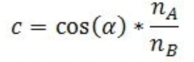
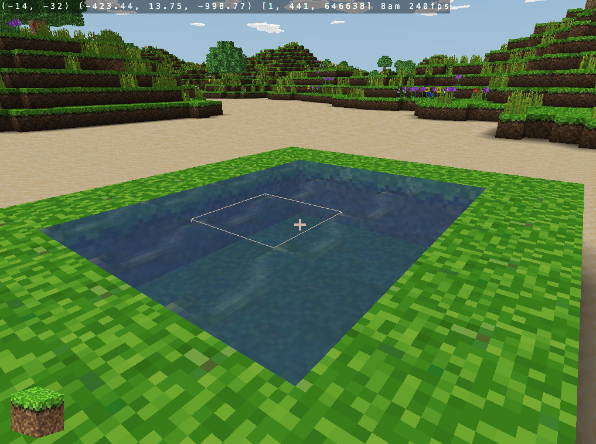

Abstract
The aim of our project is to develop new shaders for Minecraft which allows for a more realistic gaming experience in terms of how water is presented to the player. In particular, we are trying to make water look more realistic with regards to color shifting at various positions of the player, refraction, and reflection. Our project aims to understand how light rays work within the Minecraft world and to use those rays’s incoming angles to the surface normal to implement air-water refraction and reflection using the Fresnel equation. Lastly, we are hoping to make the water more dynamic and showcase some properties of flow or movement. This entire project puts into practice the concepts we learned in class about shaders, ray tracing (to mimic reflection), and texture mapping.
Technical Approach
One of the early problems we encountered was that the pre-existing code of how Minecraft shaders were implemented were scarce online, and there was overall very little documentation we could reference to help us get started. Thus, we turned to using a Minecraft clone called Craft in order to give ourselves a foundation where we can add shaders and other components. This Minecraft clone worked on multiple devices, and already used GLSL for its existing default light dynamics so this made it easier for us to implement changes within their GLSL files.
However, another problem soon emerged and we realized that the code itself in the clone was all written in C, so allocation, creation of pointers, and function declarations were all novel to us (especially when implementing depth order sorting in the semi transparent data buffer). The clone’s GitHub also contained no comments or documentation, so there was a steep learning curve for us in terms of self-learning the implementation of the Minecraft world in Craft. This was done through scavenging through GLSL files and the other compilation files of the original code.
Next, we realized that this clone does not come with water blocks, meaning that the default properties of water had to be implemented from scratch by us first, before we were able to do further refraction or reflection properties. From here, we decided we realistically needed to limit the scope of our project and focus on creating our own textured block in Craft, give it transparency, and then add some refraction and reflective properties as the last step.
Implementing water semi-transparency
Our initial approach to transparency attempted to use the built textures in the way glass implemented. Glass was "transparent" in this world because the pixels within its bounds simply don't render. We attempted to do the same, but this only resulted in swiss cheese like water as seen below

|
|
From here we realized that we must use our understanding of OpenGl to adjust shaders accordingly. As such we adjusted the block fragment shaders to lower the alpha value. While some blocks were transparent, this led to a new issue where some blocks behind the transparent blocks simply wouldn't render. This is because the camera thinks that we can't "see" them. In order to resolve this, we had to dig into the order in which glsl renders chunks. Currently, it was generating the transparent blocks before the blocks behind it, which meant that they blocks behind are not visible to the player due to the block in front occluding it. As such, we had to adjust the code to render transparent blocks last, so that the blocks behind it are fully rendered

|
|
|
|

|
|
|

|
|
|
|
|
Our project ended up having quite different results than we had initially expected. This stemmed from the need to create transparency from scratch and from the current implementation of the triangle mesh on each block face. As such, the majority of our time was spent working on redesigning the entire pipeline. However, as you can see in the above pictures, we were still able to implement some traditional water shader effects. This project ended up getting us to learn how data and rendering is dealt with in one of our favorite childhood games.
References
Homework 3 and 4 from CS184
https://www.gamedev.net/tutorials/programming/graphics/rendering-water-as-a-post-process-effect-r2642/
https://www.gdcvault.com/play/1015309/Water-Technology-of
https://www.youtube.com/watch?v=yrFo1_Izlk0
https://0fps.net/2013/07/03/ambient-occlusion-for-minecraft-like-worlds/
Contributions
Dante Hays:
Worked with Aayush to implement transparency by interfacing with OpenGL and Craft base code. Redesigned data buffer generation and object depth sorting for semi transparency. Implemented waves using timer and sin function based variance in glsl files. Helped create the final webpage.
Aayush Patel:
Worked with Dante to implement transparency by interfacing with OpenGL and Craft base code. Created new interactions with glsl files to implement shaders. Helped create the final webpage.
Angela Zhang:
Conducted initial research on fresnel effect and vertex displacement. Helped with some debugging of initial transparency implementation. Helped create the final webpage.
Jaewon Oh:
Implemented fresnel effect in glsl files. Conducted initial research and found Craft. Created slides for presentation.